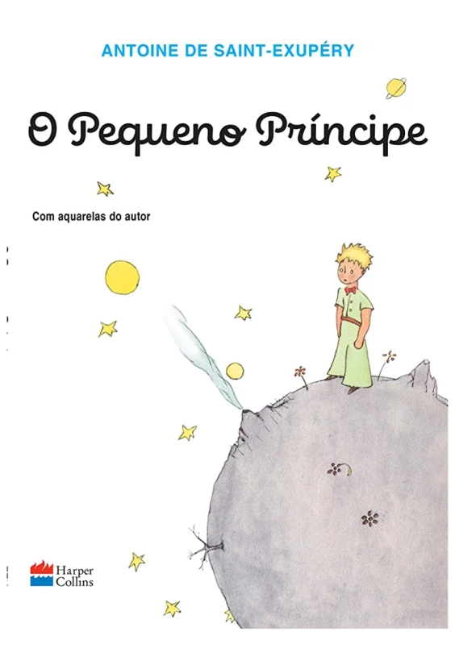

O menino da lua - Ziraldo
Sinopse
Ziraldo cria uma história surpreendente, no meio do sistema solar, onde o nada e o vazio cedem espaço às brincadeiras, às cambalhotas e a tudo aquilo que é eterno como a amizade. No livro O Menino da Lua, Ziraldo dá vida a uma turma de nove meninos, habitantes de cada um dos planetas. Ele pretende, em futuras publicações, contar a história de cada um deles, mas sem obedecer à velha ordem dos planetas do sistema solar.